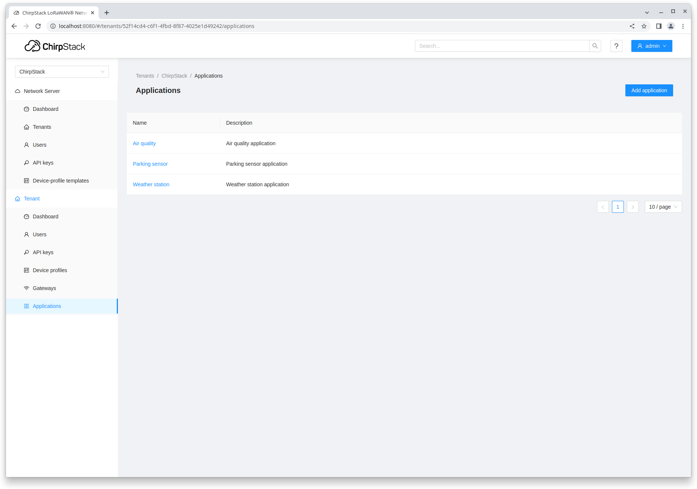

ChirpStack is an open-source LoRaWAN Network Server for deploying LoRaWAN networks. It offers a web interface for managing gateways, devices, and tenants, along with built-in integrations for major cloud providers, databases, and services commonly used to handle device data. Additionally, ChirpStack exposes a gRPC-based API that can be used to integrate with or extend its functionality.

ChirpStack is the core-component of the ChirpStack project, providing a LoRaWAN Network Server with a multi-tenant web-interface, integrations to major platforms and API endpoints for integration in other systems.
Concentratord provides a gateway daemon exposing the Semtech SX1301, SX1302/3 and 2.4GHz hardware abstractions as a generic ZeroMQ-based API. This generic API is used by the ChirpStack MQTT Forwarder, and can be used by other application for gateway monitoring.
The ChirpStack MQTT Forwarder forwards LoRa gateway messages (uplink, downlink, statistics) to a MQTT broker either using size-efficient Protobuf or as JSON. It uses the Concentratord or Semtech UDP Packet Forwarder as backend.
Open-source firmware for LoRa gateways including the ChirpStack Concentratord and ChirpStack MQTT Forwarder, supporting Raspberry Pi-based gateways, RAK, Dragino and Seeed. Optionally with ChirpStack pre-installed it provides a complete ready-to-use solution for testing and local deployments.
The ChirpStack Gateway Mesh provides a mesh solution for extending LoRaWAN coverage through (solar powered) Relay gateways. The ChirpStack Gateway Mesh does not require end-device changes, and is therefore compatible with all existing LoRaWAN devices.
In case the ChirpStack MQTT Forwarder can't be installed on the gateway, the ChirpStack Gateway Bridge allows gateways to communicate directly using the Semtech UDP Packet Forwarder or Semtech Basics Station Websocket protocols.
ChirpStack supports unicast Class-A, Class-B and Class-C devices. For for multicast Class-B and Class-C is supported.
ChirpStack has built-in support for FUOTA (both v1 as v2 specifications). Deployment progress can be monitored through web-interface and API.
Adaptive data-rate support is provided out-of-the-box for LoRa and LR-FHSS modulations. Custom algorithms are supported through (JavaScript-based) plugins.
ChirpStack supports serving multiple regions simultaniously, it also supports serving multiple configurations of the same region simultaniously.
Gateways and devices can be isolated per tenant. Within a tenant users can be restricted to certain resources within a tenant (gateways, device-profiles, applications and devices).
The web-interface provides real-time access to LoRaWAN frames and published integration events for debugging.
ChirpStack keeps an internal state of the device, and will send mac-commands in case its state no longer reflects the desired configuration (RX / TX parameters, channel configuration, ...).
gRPC and REST APIs are provided, such that ChirpStack can be embedded into external solutions. As the web-interface is built on top of the Chirpstack API, all web-interface actions can be programmatically performed through the API.
ChirpStack offers many more features, from SSO support through OpenID Connect, many integrations, passive-roaming support, ... Please refer to the documentation for more information.
Please report a bug by creating an issue at the related GitHub repository. GitHub links can be found at the documentation page of each component.
For questions and community support, please refer to support.chirpstack.io.
For commercial support, contact Orne Brocaar, the author of ChirpStack.
Become a sponsor today: https://github.com/sponsors/chirpstack/.